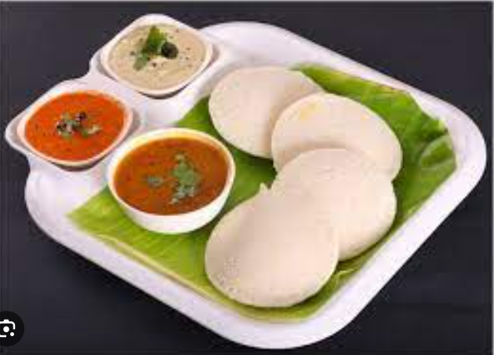

Soaking Rice And Lentils
Pick and rinse both the regular rice and parboiled rice.
Rinse the poha and add to the rice.
Add water. Mix well. Cover and keep the rice + poha to soak for 4 to 5 hours.
In a separate bowl, rinse the urad dal and methi seeds a couple of times.
Soak the urad dal with methi seeds separately in water for 4 to 5 hours.
Making Idli Batter
Drain the soaked urad dal. Reserve the water.
Grind the urad dal, methi seed with ¼ cup of the reserved water for some seconds.
Then add remaining ¼ cup water. Grind till you get a smooth and fluffy batter.
Remove the urad dal batter in a bowl and keep aside.
Grind the rice in batches to make a smooth batter.
Mix both the batters together in a large bowl or pan. Add salt and mix well.
Cover and let the batter ferment for 8 to 9 hours or more if required.
After the fermentation process is over, the idli batter will become double in size and rise.
Steaming Idli
Grease the idli moulds.
Pour the batter in the moulds and steam the idli in a pressure cooker or steamer.
If using pressure cooker remove the vent weight (whistle).
Steam for 12 to 15 mins or until the idli is done.
Serve the steaming hot idli with coconut chutney and sambar.
Remaining batter can be stored in the refrigerator for a couple of days.